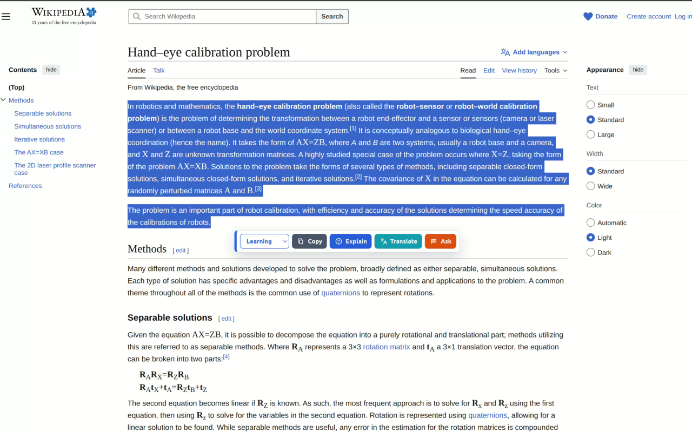

Selection toolbar
Highlight text and launch common actions directly from the page.
Chrome extension for fast AI workflows
Select text on any page, choose a reusable action, and send a ready-made prompt to your preferred AI chat platform in Chrome's side panel.

Use the web content already in front of you without copying it into another tab.
Explain, translate, summarize, draft, polish, brainstorm, or ask a custom question.
The target platform opens beside the page with the generated prompt ready to go.
What it does
AI Buddy keeps prompt actions close to the text you are reading, while leaving configuration and platform behavior under your control.
Highlight text and launch common actions directly from the page.
Group actions for learning, workplace, creative, or your own workflows.
Keep the source page visible while the chat platform handles the prompt.
Customize action templates, colors, toolbar order, and response language.
AI chat platforms can auto-send; messaging platforms draft until you allow it.
The extension stores preferences and actions, not your prompts or conversations.
Screenshots



Local install
Build the repository locally, then load the generated dist/ folder
from Chrome's extensions page.
npm installnpm run buildchrome://extensions and enable Developer mode.dist/.AI Buddy is not affiliated with any AI chat or messaging platform. You sign in to your own platform account, and selected text is sent only when you trigger an action.